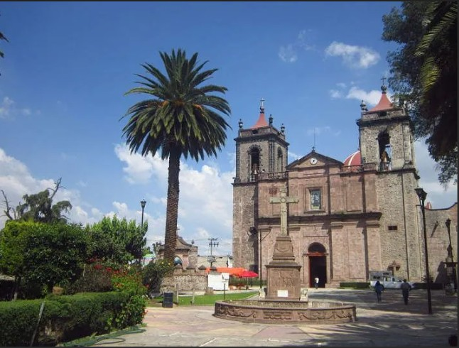
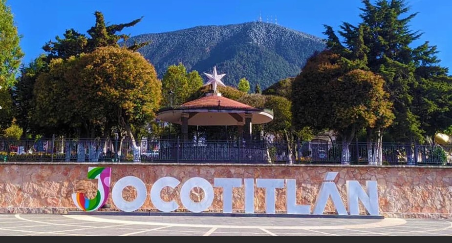
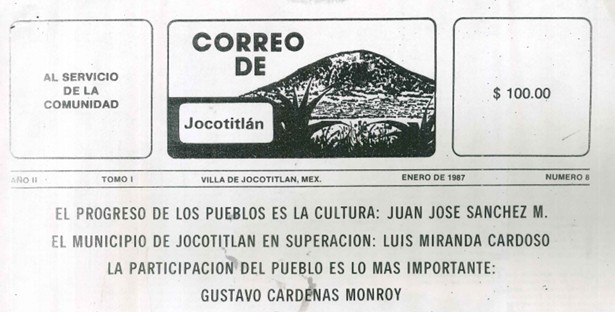

En cuanto al significado de la palabra náhuatl Xocotitlán, se deriva de xocotl: "fruta agridulce" y de titlan: "entre"; que significa: "entre árboles de fruta ácida", como tejocote o bien entre árboles de tejocote.
Escudo: La figura que representa la identidad del territorio y población de Xocotitlán a través del tiempo ha sido la del dios Otontecutli. No se tiene noticias acerca de deidades propias de la cultura mazahua asentada en Xocotitlán antes del dominio náhuatl; lo que sí está claro es que la principal deidad fue Otontecutli, el cual fue reconocido por los tepanecas y otomíes. En la parte superior lleva un círculo en color café tenue, en su interior la silueta del jeroglífico de Jocotitlán compuesto de un "tepetl" y la cara del dios "Otontecutli".
Forma parte de la región norte del Estado de México y es conocido por su volcán, su población indígena mazahua y su desarrollo histórico desde tiempos prehispánicos.
Historia - Reseña Histórica: Durante parte del periodo clásico (200 a 600 d.C.), podemos afirmar que ya existía en nuestra zona una población sedentaria, agricultura y en contacto con Teotihuacán. Según los datos lingüísticos, los habitantes del sitio pudieron ser del grupo otomazahua, por lo que quizá se trate de un grupo local que recibe influencia de Teotihuacán.
Su relación con este centro cultural fue la de un poblado marginal que recibe tardíamente su influencia, pero que a la vez ocupó un puesto de avanzada en la cultura del altiplano central (teotihuacana) hacia la zona noroccidental de Mesoamérica. La ocupación más antigua del valle ocurre entre 200 y 600 d.C.
Para el periodo de 600 a 900 d.C., carecemos de evidencias arqueológicas y no aparecen bien caracterizados los complejos cerámicos mazapa y coyotlatelco, que son los que marcan el final del Clásico y el principio del Postclásico.
Hay diversas opiniones sobre el origen del nombre mazahua. Algunos, basados en Sahagún, creen que se llamaba así por su caudillo Mazatl Tecuhtli; otros explican la etimología de esta palabra náhuatl derivándola de mazti, "venado", y dicen que significa: "gente de venado" o "poseedores de venado". A la región que habitó esta tribu se le llamó Mazahuacán.


El CORREO de JOCOTITLÁN se publicó por primera vez en el mes de JUNIO 1986, llegando a si fin en el mes de abril de 1993. A punto estuvo de cumplirse siete años de vida. Este periodico mensual surge a iniciativa de la profesora CELIA CEDILLO DE PEDROZA y el maestro y gran caricaturista ANTONIO CARDOSA GUTIERREZ. A ellos se le unieron un grupo de colaboradores convencidos de que en Jocotitlán era necesario un medio informatico local. En memoria de ellos que ya partieron, un reconocimientopóstumo a su gran visión social y el agradecimiento a todos los que participaron con sus articulos, para dar información y estructura a cada publicación. A casi 40 años de la publicación (1986-2026) se realiza una difusión de esta pequeña parte de la MICRO-HISTORIA de JOCOTITLÁN.

Periódico Enero 1987